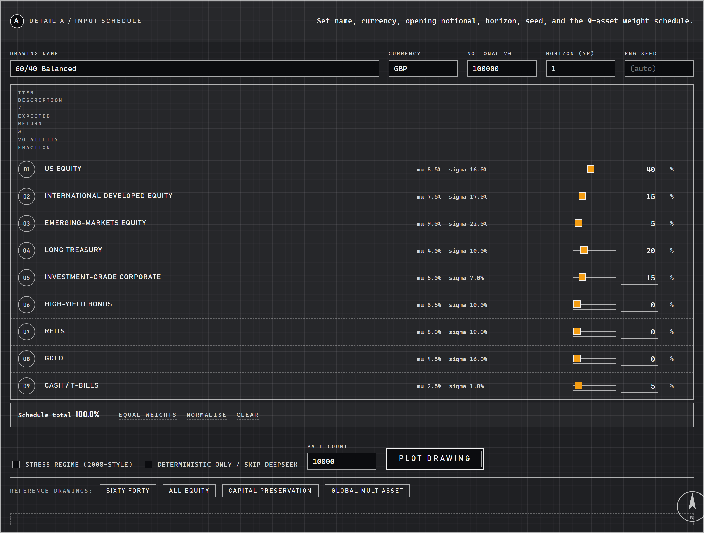
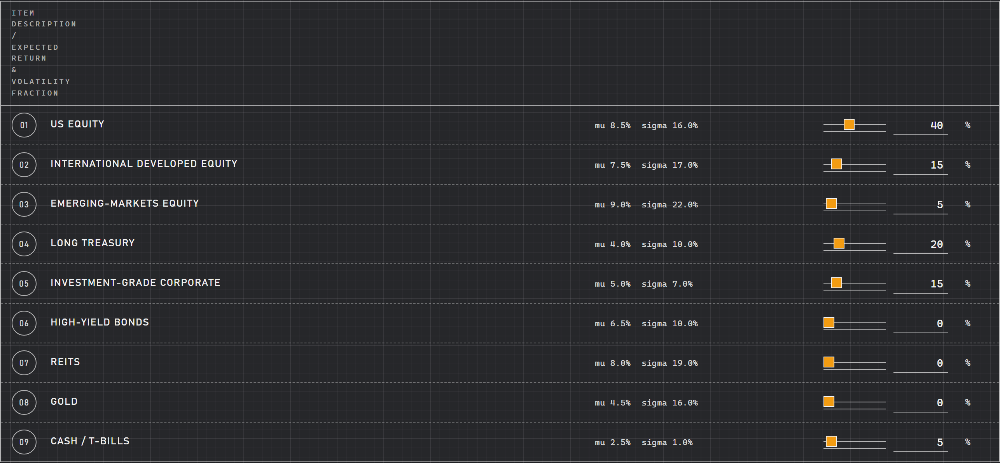
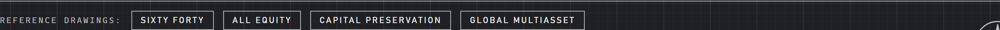

Monte Carlo
About the project
Run 10,000 simulations on a multi-asset portfolio with configurable returns, volatility, correlations.
Local-only Flask web app and CLI that runs a 10,000-path Monte Carlo simulation over a 9-asset portfolio, computes a full risk readout (VaR / CVaR / Sharpe / Sortino / max drawdown), attributes downside contribution per asset, and asks DeepSeek V4 to write a 3-paragraph commentary on what the distribution actually says. The maths is deterministic and reproducible; the AI never touches a number. The UI renders as a literal engineering blueprint: deep cyan ground, white drafting linework, drawing title block with FOR REVIEW stamp, detail callouts A through H, FIG 01 / FIG 02 / FIG 03 figure numb
At a glance
- Engine
- Cholesky-decomposed multivariate normal in log-space; Ito drift correction
- Universe
- 9 asset classes (US / international / EM equity, long Treasury, IG / HY corporates, REITs, gold, cash)
- Model
- DeepSeek V4 (deepseek-chat), one call per simulation (deterministic fallback if offline)
- Cost
- around $0.0002 per readout, well under the 1c ceiling
How it works
- Asset universe. asset_universe.py defines 9 asset classes with annual mu / sigma calibrated to long-run historical estimates (e.g.
- Allocation schema. portfolio_schema.py wraps weights in a typed Allocation dataclass with a parse_allocation validator: weights must be in [0, 1], must sum to 1.0 within 1e-3, unknown codes are...
- Monte Carlo engine. simulator.py builds the monthly covariance Sigma_m = D R D, Cholesky-decomposes it once with a 1e-12 ridge for stability, and draws N x T x K standard normals from numpy's PCG64.
- Risk metrics. risk_metrics.py reads the (N, T+1) path matrix and computes expected / median / 5/25/50/75/95 percentiles of terminal value, VaR and CVaR at 95% and 99%, Sharpe and Sortino vs the...
- AI commentator. ai_commentator.py builds a small digest from the metrics + allocation (around 250 input tokens) and asks DeepSeek V4 in JSON mode for headline + narrative + three observations +...
- Engineering-blueprint UI. Distinct from Day 7 (Bloomberg terminal black), Day 8 (glass orbs gradient), Day 9 (parchment + navy serif italic + gold), Day 10 (sage cream + bold colour blocks + heavy...
AI integration
DeepSeek writes the risk commentary
Fun facts
- It runs ten thousand simulations of a multi-asset portfolio to map the full range of what could happen, not just the average.
- Returns, volatility and correlations are all yours to set.
Screenshots



